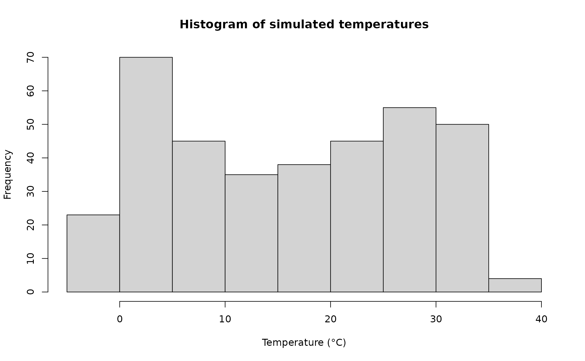
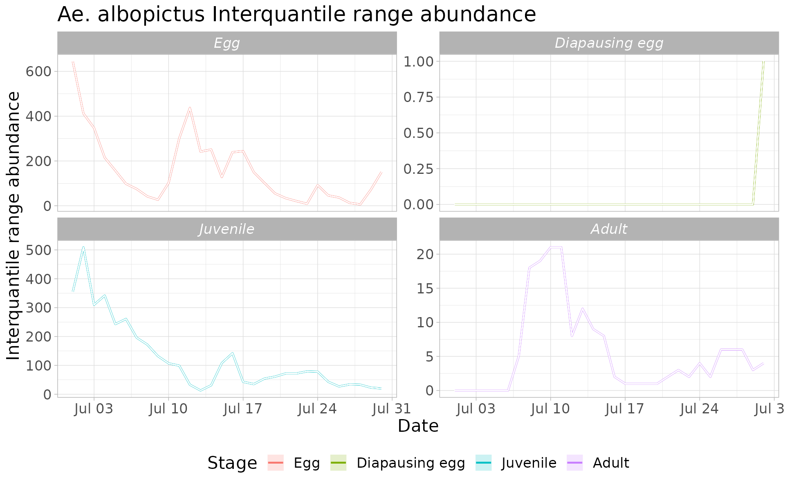

Describing the main features of *dynamAedes*: the punctual scale model.
dynamAedes: A Unified Mechanistic Model For The Population Dynamics Of Invasive Aedes Mosquitoes.
Daniele Da Re, Sophie 0. Vanwambeke, Matteo Marcantonio
2022-06-27
Source:vignettes/dynamAedes_punctual.Rmd
dynamAedes_punctual.RmdThis tutorial explains step-by-step the main features of dynamAedes package, a unified modelling framework for invasive Aedes mosquitoes. Users can apply the stochastic, time-discrete and spatially-explicit population dynamical model initially developed in Da Re et al., (2021) for Aedes aegypti and then expanded for other three species: Ae. albopictus, Ae. japonicus and Ae. koreicus Da Re et al., (under review).
The model is driven by temperature, photoperiod and intra-specific larval competition and can be applied to three different spatial scales: punctual, local and regional. These spatial scales consider different degrees of spatial complexity and data availability, by accounting for both active and passive dispersal of the modelled mosquito species as well as for the heterogeneity of input temperature data.
We will describe the model applications for Ae. albopictus and for all spatial scales by using a simulated temperature dataset.
#Load packages
require(spatstat)
require(sp)
require(gstat)
require(parallel)
require(eesim)
require(tidyverse)
require(geosphere)
require(ggplot2)
require(rgeos)
require(rgdal)
require(dynamAedes)
Sys.setlocale("LC_TIME", "en_GB.UTF-8") # [1] ""Punctual scale model
At punctual scale, the model only requires a weather station temperature time series provided as a numerical matrix (in degree Celsius). For the purpose of this tutorial, we simulate a 1-year long temperature time series.
Simulate temperature data with seasonal trend
We first simulate a 1-year temperature time series with seasonal trend. For the time series we consider a mean value of 16°C and standard deviation of 2°C.
ndays = 365*1 #length of the time series in days
set.seed(123)
sim_temp <- create_sims(n_reps = 1,
n = ndays,
central = 16,
sd = 2,
exposure_type = "continuous",
exposure_trend = "cos1", exposure_amp = -1.0,
average_outcome = 12,
outcome_trend = "cos1",
outcome_amp = 0.8,
rr = 1.0055)A visualisation of the distribution of temperature values and temporal trend.
hist(sim_temp[[1]]$x,
xlab="Temperature (°C)",
main="Histogram of simulated temperatures")
plot(sim_temp[[1]]$date,
sim_temp[[1]]$x,
main="Simulated temperatures seasonal trend",
xlab="Date", ylab="Temperature (°C)"
)Format the simulated input datasets and run the model
Model settings
Float numbers in the temperature matrix would slow the computational speed, they must be multiplied by 1000 and then transformed in integer numbers. We also transpose the matrix from long to wide format, since we conceptualized the model structure considering the rows as the spatial component (e.g., observations; here = 1) and the columns as the temporal one (e.g., variables).
We are now left with a few model parameters which need to be defined by the user.
## Define the day of introduction (July 1st is day 1)
str = "2000-07-01"
## Define the end-day of life cycle (August 1st is the last day)
endr = "2000-08-01"
## Define the number of eggs to be introduced
ie = 1000
## Define the number of model iterations
it = 1 # The higher the number of simulations the better
## Define the number of liters for the larval density-dependent mortality
habitat_liters=1
#Define latitude and longitude for the diapause process
myLat=42
myLon=7
## Define the number of parallel processes (for sequential itarations set nc=1)
cl = 1
## Set output name for the *.RDS output will be saved
#outname= paste0("dynamAedes_albo_ws_dayintro_",str,"_end",endr,"_niters",it,"_neggs",ie)
df_temp <- data.frame("Date" = sim_temp[[1]]$date, "temp" = sim_temp[[1]]$x)
w <- t(as.integer(df_temp$temp*1000)[format(as.Date(str)+1,"%j"):format(as.Date(endr)+1,"%j")])Run the model
Running the model with the settings specified in this example takes about 2 minutes.
simout <- dynamAedes(species="albopictus",
scale="ws",
ihwv=habitat_liters,
temps.matrix=w,
startd=str,
endd=endr,
n.clusters=cl,
iter=it,
intro.eggs=ie,
compressed.output=TRUE,
lat=myLat,
long=myLon,
verbose=FALSE,
seeding=TRUE)#
|
| | 0%Analyse the results
We first explore the model output structure: the simout object is a nested list.
The first level corresponds to the number of model iterations
print(it)# [1] 1# [1] 1The second level corresponds to the simulated days. So if we inspect the first iteration, we observe that the model has computed rlength(simout[[1]]) days, since we have started the simulation on the 1st of July and ended on the 1st of August.
length(simout[[1]])# [1] 30The third level corresponds to the amount of individuals for each stage (rows). So if we inspect the 1st and the 15th day within the first iteration, we obtain a matrix having
dim(simout[[1]][[1]])# [1] 4 1
simout[[1]][[1]]# [,1]
# egg 645
# juvenile 355
# adult 0
# diapause_egg 0
simout[[1]][[15]]# [,1]
# egg 128
# juvenile 108
# adult 8
# diapause_egg 0We can now use the auxiliary functions of the package to analyse the results.
Derive probability of a successfull introduction at the end of the simulated period
First, we can retrieve the “probability of successful introduction”, computed as the proportion of model iterations that resulted in a viable mosquito population at a given date. In this case the results is 1, since we have only one iteration and the population is still viable at the end of the simulation.
psi(input_sim = simout, eval_date = 30)# Days_after_intro p_success stage
# 1 Day 30 1 PopulationDerive abundance 95% CI for each life stage and in each day
We now compute the interquantile range abundance for all the stages of the simulated population using the function adci.
# Retrieve the maximum number of simulated days
dd <- max(sapply(simout, function(x) length(x)))
# Compute the abundance
outdf <- rbind(data.frame(cbind(
data.frame(adci(simout, eval_date=1:dd, breaks=c(0.25,0.50,0.75), st=1)),
myStage = 'Egg')),
data.frame(cbind(
adci(simout, eval_date=1:dd, breaks=c(0.25,0.50,0.75), st=2),
myStage='Juvenile')),
data.frame(cbind(
adci(simout, eval_date=1:dd, breaks=c(0.25,0.50,0.75), st=3),
myStage='Adult')),
data.frame(cbind(
adci(simout, eval_date=1:dd, breaks=c(0.25,0.50,0.75), st=4),
myStage='Diapausing egg'))
)
# Plot
outdf %>%
mutate(myStage=factor(myStage, levels= c('Egg', 'Diapausing egg', 'Juvenile', 'Adult')),
X25.=as.numeric(X25.),
X50.=as.numeric(X50.),
X75.=as.numeric(X75.),
Date=rep(seq.Date(as.Date(str), as.Date(endr)-2, by="day"),4)) %>%
ggplot( aes(x=Date, y=X50., group=factor(myStage),col=factor(myStage))) +
ggtitle("Ae. albopictus Interquantile range abundance")+
geom_line(size=0.8)+
geom_ribbon(aes(ymin=X25.,ymax=X75.,fill=factor(myStage)),
col="white",
alpha=0.2,
outline.type="full")+
labs(x="Date", y="Interquantile range abundance", col="Stage", fill="Stage")+
facet_wrap(~myStage, scales = "free_y")+
theme_light()+
theme(legend.pos="bottom",
text = element_text(size=16) ,
strip.text = element_text(face = "italic"))